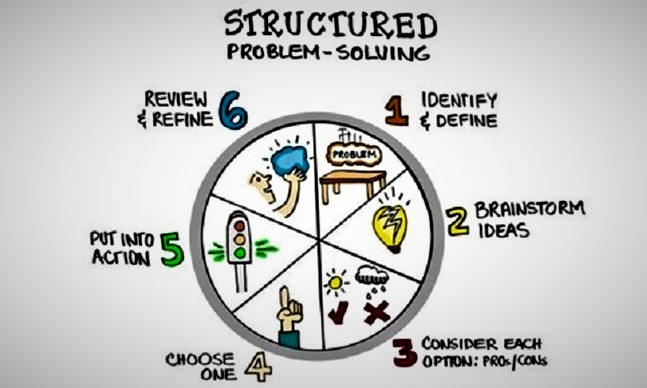

past
I struggled the most when...
Completing the JavaScript Katas. In particular, 'JS-Gradebook'. I was unable to get the average of a given array. From writing the pseudocode out, I was able to understand the flow of the problem. I was still unable to create working code but managed to find a solution on the website StackOverflow. I did not use that well of a structure to solve this issue, I firstly spent more time trying different random methods than actually researching into the problem.
Since I have researched on problem solving this past week, I have come to the realisation that there are many ways to solve problems. Techniques that help amateur developers become more efficient at writing code, or at any other problems that a person may go through.
present
Sesame Street
I am putting these newly found techniques to good use.
